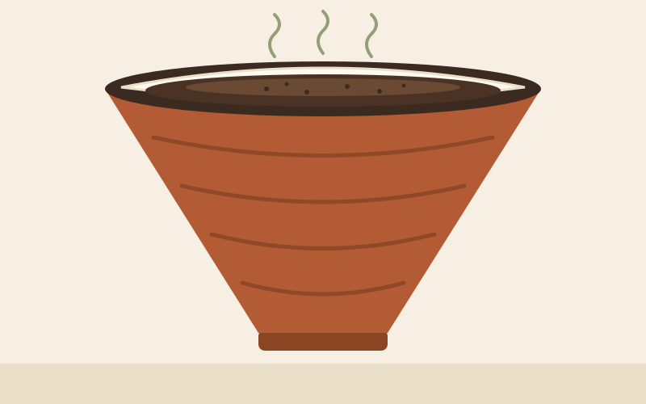

About Pour-Over Coffee
Pour-over is a manual brewing method in which hot water is poured by hand, in slow circular motions, over coffee grounds sitting in a paper or metal filter. Unlike a fully automatic drip machine, every part of the process is controlled by the person brewing. It is not the fastest way to make coffee, but for many people that slowness is the whole point.
Key Dates in Pour-Over History
- — Melitta Bentz invents the first paper coffee filter.
- — Peter Schlumbohm designs the Chemex.
- — Hario introduces early cone-shaped drippers.
- — Hario releases the V60 dripper.
- — The "third wave" coffee movement gains momentum.
- — Pour-over bars become common in specialty cafés.
Facts Worth Knowing
- A good pour-over usually takes between 2.5 and 4 minutes.
- Water temperature is normally kept between 90°C and 96°C.
- The "bloom" releases trapped gas from freshly roasted beans.
- A medium-fine, even grind is one of the biggest factors in a balanced cup.
- Coffee is believed to have originated in the highlands of Ethiopia.

Coffee should be black as hell, strong as death, and sweet as love.
Where It All Began
Coffee's story starts long before pour-over existed. Most historians trace the plant back to the Kaffa region of Ethiopia.
Read more: Coffee — Wikipedia (opens in a new tab).